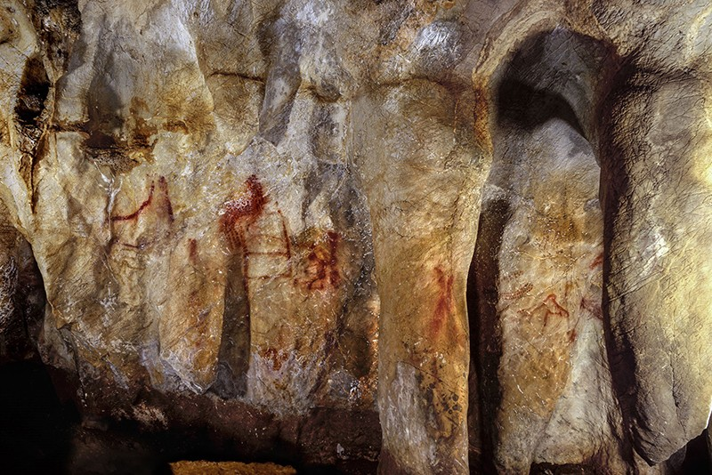
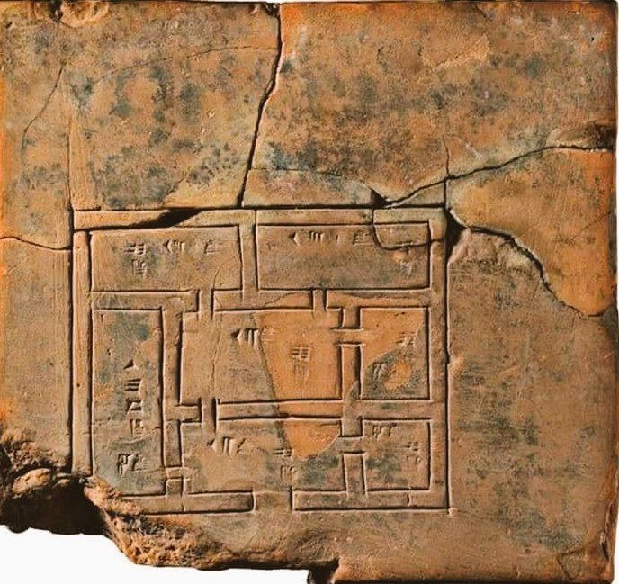
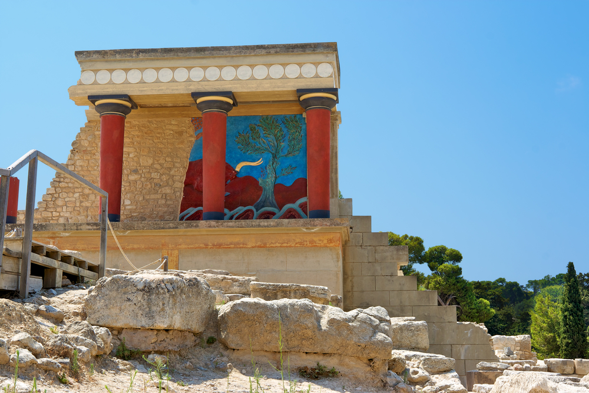
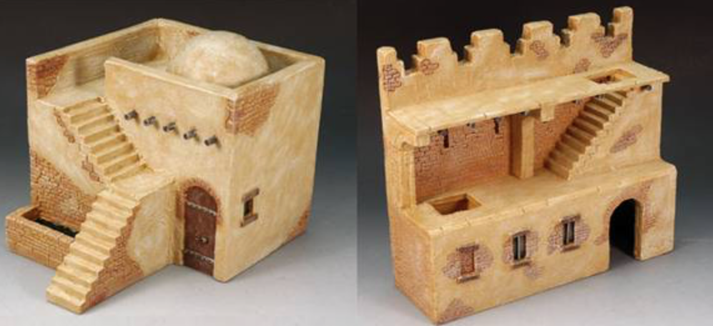
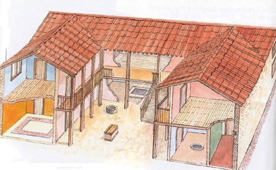
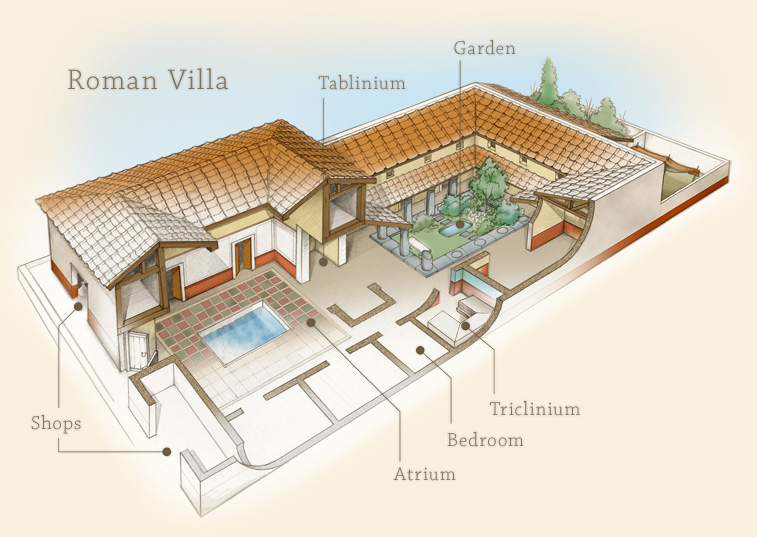
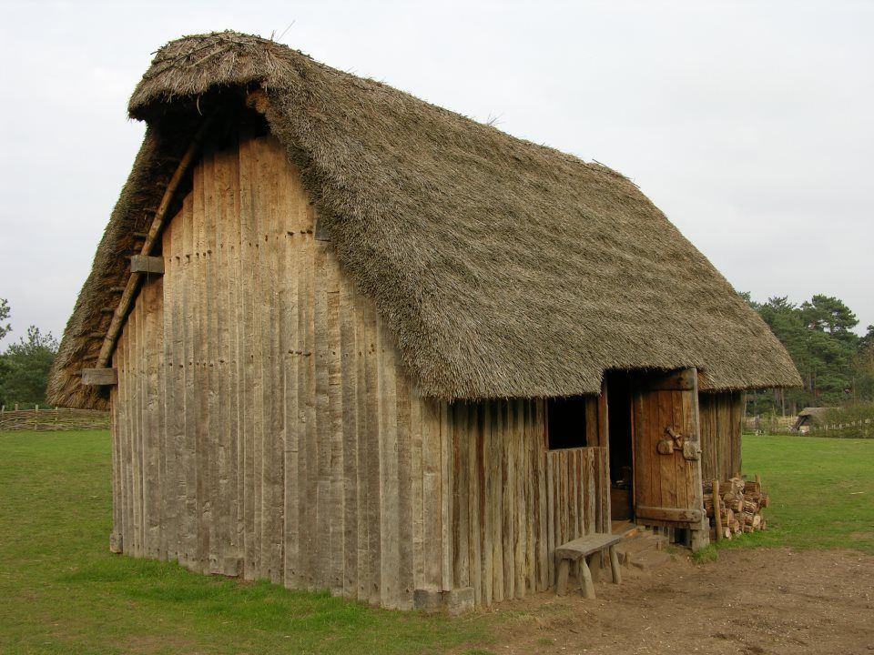
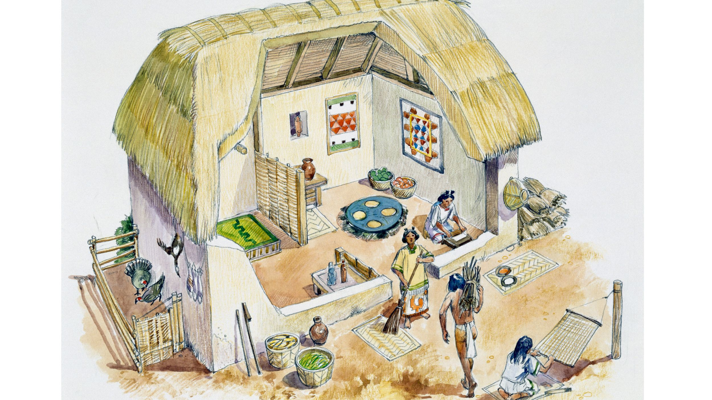
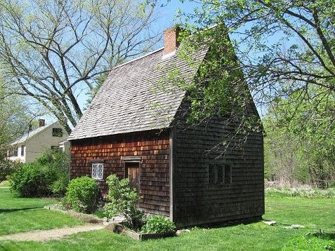
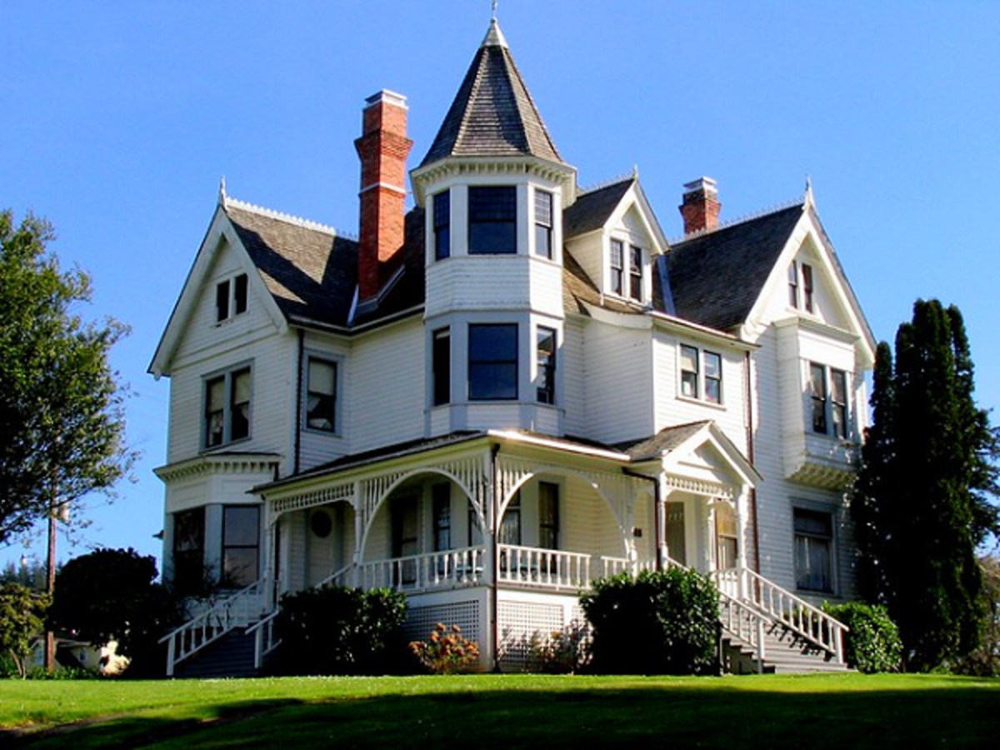

Tech: Now and Then

18 May 2021

Some decently modern houses, showing the end result of house construction nowadays.
The house is one of the most important things that we have. It shelters us from the harsh outside, as well as keeps us warm/cold to the perfect temperatures we like. But how did it get to this? How long did it take until the house was perfected? And how long ago was the first ever "house"? Well, the Neanderthals have something to say about that.
A basic cave painting made by a Neanderthal, providing evidence that they did use caves as shelter.
The earliest known "houses" that humans used were mostly caves and overhangs due to most Neanderthals already using what they had so more time could be spent on hunting and surviving, as well as not having to build an entire place to live to only abandon the next day due to their nomadic lifestyles. Although, it does seem that some used things like mammoth skin as tents, using the bones as supports. Although, once the ice age ended, people began to settle down and begin to specialize in all sorts of things, ditching the nomadic lifestyle for a community that stayed in one place and grew food. Food began to be cooked in clay overs, and sun-dried bricks began to be used as a basic construction tool to create homes. In 7,000 BCE, people in Jericho began to use mortar, which allowed them to plaster walls and floors to better insulate their living spaces. Then, Catal Hoyuk became one of the world's first towns around 6,500 BCE, with a population of around 6,000 people. The houses were built out of brick and were touching against each other, and people entered through hatches in their roofs instead of doors. The main reason why people likely entered through their roofs was due to the place having no walls, so they didn't want any animal to just walk in and possibly steal/hurt the person's belongings or selves. The roofs also acted as streets due to them leading to the entrances of many houses. There was also no panes in any of the windows or chimneys in the houses, though there was holes in the roofs that let smoke escape the houses so that they didn't suffocate the people inside. Most houses also had some kind of painted on mural, along with having the corpses of people buried inside the house (the people were most likely just bones by that point though, as you can't have a rotting corpse in a house).
A floor plan of a house built in Sumeria, showing how their houses would look on the inside. The cuneiform writing likely was the room names.
Most houses generally stayed this way, with some brick being substituted for wood due to mud not being a readily available asset in some places. The first civilization in the world rose up in Sumer, with many city-states that were all unified in general rules. Most upper class people lived in large houses with many rooms, mostly still made out of mud bricks. Their houses were often two stories high and were arranged around courtyards and other public centers that could be considered streets. Most poor people lived in small, single-room huts. Another civilization was the Indus Valley, which had several public buildings to make city life easier, like a public bath, assembly halls, and a granary. The city was mostly laid out in a grid pattern, along with most houses being two or three stories and made out of brick or stone. Bricks had a standard size in the civilization, along with having standard weights and measures.
A part of the Knossos palace on Crete. It's restored to show what it would look like back then, when it was first constructed.
The Minoans were another early civilization, which is famous for the palace at Knossos. The palace was built around a central courtyard, and had storage areas on the first floor that stored things like grain and olive oil in large clay jars. The upper floors of the palace were luxurious living quarters that had many things like light wells, wooden columns, and frescoes. Most paintings there depicted animals like dolphins and fish, along with other sea animals. The palace of Knossos even had a bathroom with a flushing toilet! Most people lived in stone houses though, as most of them were poor and couldn't afford that type of thing. These stone houses usually had one to two rooms and weren't extremely well furnished.
Two models created to show what average Egyptian houses looked like back then.
In around 2,500 BCE's ancient Egypt, rich Egyptians lived in large houses with many rooms. Walls were painted, and floors had colored tiles. Most wealthy houses had enclosed gardens with pools to make sure those gardens didn't dry up. Rich Egyptians often had wooden furniture like beds, chairs, tables, and chests. Pillows were wooden headrests, due to synthetic feathers not being created at that point. Toilets were clay pots filled with sands that would be emptied regularly. Ordinary people lived in simpler homes built out of mud bricks with about 4 rooms. People may have also slept on their roofs when it was hot, along with doing work outside due to poor ventilation inside of these homes. The furniture of these lower-class Egyptians were brick benches, reed chests, and wooden pegs, as most Egyptians didn't spend much time inside of homes.
An illustration showing the interior and exterior of an ancient Greek house, showing how the houses were made and what types of rooms they contained.
Greek homes were often plain and simple, with mud brick walls fortified with plaster. Roofs were made of pottery tiles, and windows did not have glass and were just holes. Poor people often lived in one- to three room houses, with rich Greeks living in large houses with several rooms. The houses often had an upper story, with courtyards being incorporated into their designs. Downstairs had the kitchen and dining room (andron) along with the living room, and the upstairs had rooms like a bedroom and gynoecium, which was specifically for women and had them weave cloth and eat meals away from men. Weird thing to specifically build in a house.
Persian houses are much more different. Rich Persians lived in palaces of timber, stone, and brick, with a lot of comfortable upholstered furniture like beds, couches, and chairs. Tables often were overlaid with gold, silver, and ivory, and gold and silver vessels were used as fancy drinking cups. Tapestries and carpets are also found in these houses, along with large gardens that coined the term "paradise". For most people though, they would live in simple houses made of mud bricks, with maybe upper classes having several rooms. Most of these huts often only had one room though.
An illustration that labels the basic parts of a Roman villa. Notice how similar it is to the Greek houses.
Rome had most poor people live in flats called insulae. Essentially, these were large apartment complexes that would usually be around five stories tall. These were also often constructed poorly, with many walls and roofs caving in. Most people in these places lived in one or two rooms, with rooms being heated by charcoal burned in braziers. Most water was obtained through public fountains and troughs, and they would have to buy food from shops due to the risks of cooking in one of these flats. Most upper-class homes were often similar to Greek upper-class houses, with wall paintings and murals that had central heating in the form of a hypocaust. Their windows did have panes of glass.
Saxons often lived in wooden huts that everyone in a family shared, with animals possibly staying due to their body heat warming the home in winter. Floors were often just dirt, but upper class people had wooden floorboards. Some people could afford beds, but others had to sleep on the same dirt that their houses were built on. There were also no carpets.
An example of what a Medieval peasant house often looked like, with cheap walls and roofs that barely retained heat during harsh winters.
Peasant houses during the Middle Ages were simple wooden huts with wooden frames filled in with strips of wattle and daub (strips of wood woven together with animal hair and clay). Some other houses were made out of stone. Peasant huts were often whitewashed or painted in a bright color, with the poorest of people living in one-room huts that often reeked due to poor sanitation. Some better peasants lived in huts with one or two rooms. Windows were often holes with wooden shutters, and floors were dirt with maybe straw to conserve warmth. The middle of a Peasant's home often had a firepit for cooking and heating, with no chimney being inside of the house. Furniture was very expensive, with most just using benches, stools, simple wooden tables, and chests. Tools and pottery were often hung on hooks for easy access, and most peasants slept on floors with their animals to keep the house warm. Most peasant "beds" were straw on the floor with wooden logs being used as pillows. Richer people, on the other hand, had much larger houses. Originally, in the 12th century, most wealthy peoples' homes were constructed using stone, but most later rich homes were built with materials like wood. In Saxon times, rich men had their entire household in one great hall, but later times had the lord sleeping above the great hall in a room called the solar. Servants still slept in the great hall though. On one or both ends of the hall were fireplaces with chimneys, which only rich people could afford due to the careful construction of it and manpower needed to build it. There were also glass windows, which only rich people could afford due to the process. The people that could not afford glass would use thin strips of horn or linen soaked in tallow/resin to be translucent.
16th century houses deserve their own category due to the fact that the houses became much less dependent on defending the people inside, rather they were on comfort and beauty. Rich Tudors built grand houses with many floors, and middle class people built "half-timbered" houses that were made with a timber frame and filled in with wattle and daub (wickerwork and plaster). Bricks also became popular again, and roofs began to use tiles for a more quality roofing. More people could begin to afford windows, and people even took their glass whenever they moved due to the price of it. Poor people still had to use linen soaked in oil though. Chimneys also began to become more affordable, but many people still had to have one-floor houses to allow the smoke to escape their house.
An illustration of a basic Aztec house, which also shows the kind of people that would inhabit it.
In the 16th century, the Spanish destroyed many civilizations in North and South America, including the Aztecs. Ordinary Aztecs lived in huts, often just one room. The huts were made of adobe and any furniture was very simple, due to it mostly consisting of reed mats and low tables. Wooden chests were often used to store clothes and valuables. Aztec nobles, however, lived in much more grand homes with many rooms. They would usually be shaped like hollow squares with a central courtyard, with gardens and fountains. Also, only upper-class citizens could build a house with two levels by law. If a lower-class citizen did so, they'd be executed.
The Inca's houses were very simple. They often just had one room, with no furniture other than reed mats or animal skins. Doors and windows were shaped like trapezoids, and roofs were thatched with no chimneys. Rich Incas lived in more lavish palaces, but there weren't any major differences between the large and small houses other than the size and number of rooms. Mayan houses are similar, with them living in simple huts of wood or stone with thatched roofs. There were no chimneys and windows, along with no wooden doors. Doors often were cloth screens, and beds were often low platforms made of wood filled with woven bark. Dead Mayans were also buried in their houses, similar to Sumerians. Rich Mayans also lived in more lavish homes, but with no major differences.
One of the oldest standing homes in Massachusetts, which was built during the 17th century.
By the 17th century, homes had massively improved. Many houses started to be rebuilt with stone or brick to make the buildings much warmer and drier, and even the poorest of people had houses made out of brick or stone. Chimneys also started to become much more common, with the average person being able to install one. The same thing happened with glass windows, with the average person being able to afford glass. People also didn't have to take all of their glass with them anymore every time they moved. Windows also started to have hinges, allowing people to either have a protected view of the outside or a open hole in their house to let in air. Poor people's homes were much better, but still most had the issue of crowding due to most houses being one to three rooms. In the 18th century, more rich people built lavish country houses that invented a style referred to as "neo-classical", but the poor still had no real improvements during these years.
A 19th century Victorian house, showing the style of the rich that was used at the time.
While living conditions for the average rich American during the 19th century were usually decent due to the lower class doing most of the work for them, most poor people lived in pitiful houses that were mostly shacks. In Britain, it was much worse, with the average poor person living in a 'back-to-back', or a two to three room house that were surrounded on all sides by identical houses. The worst rooms were the cellar dwellings, with them being very damp and poorly ventilated. Many people there slept on piles of straw because they couldn't afford beds. Thankfully, they were outlawed in 1840, meaning that any new ones couldn't be built and old ones would be destroyed and replaced with better housing. Skilled workers lived in 'through houses', or houses that were not joined to other houses. As time passed, more and more people could afford the lifestyle. By 1875, towns passed building regulations that stated that new houses must be a certain distance apart, rooms must be a certain size, and windows also must be a certain size. By 1880, most working-class people could afford those houses and lived a slightly better lifestyle. Unfortunately, there were still many stuck in slums with one room. Old houses could be divided up into several "homes", and poor repairs were done on the houses to make sure the slumlord got the most profit.
By the 20th century, working class homes had two rooms downstairs, those being the front room and the back room. The front room was often kept clean, and the back room is where most family meetings and cooking took place. Most cooking was done with coal-fired stoves until gas took over, along with fireplaces becoming the main source of heat due to gas being expensive to heat a whole home. In 1900, 90% of the population was renting a home, but homeownership became more common during the 20th century, with 27% of the population owning a home. Central heating became more readily available in the 1960's-1970's, and double glazing became more common in the 1980's. In early 1950's many homes in Britain still didn't have bathrooms and only had outside lavatories. Slum clearance was greatly advanced when many old houses were demolished in the construction of flats. These flats were unpopular with some people, as many felt isolated due to the lack of community that were in these homes.